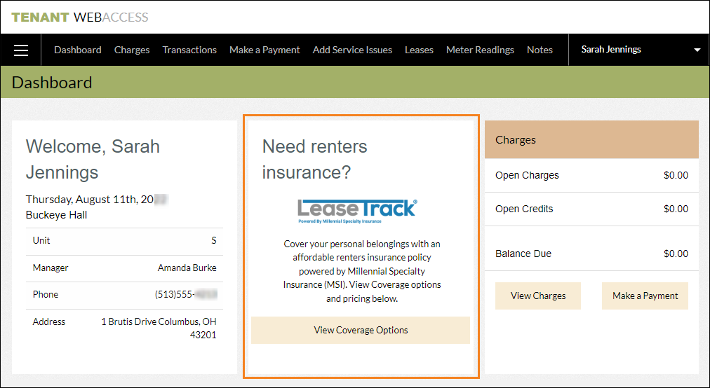
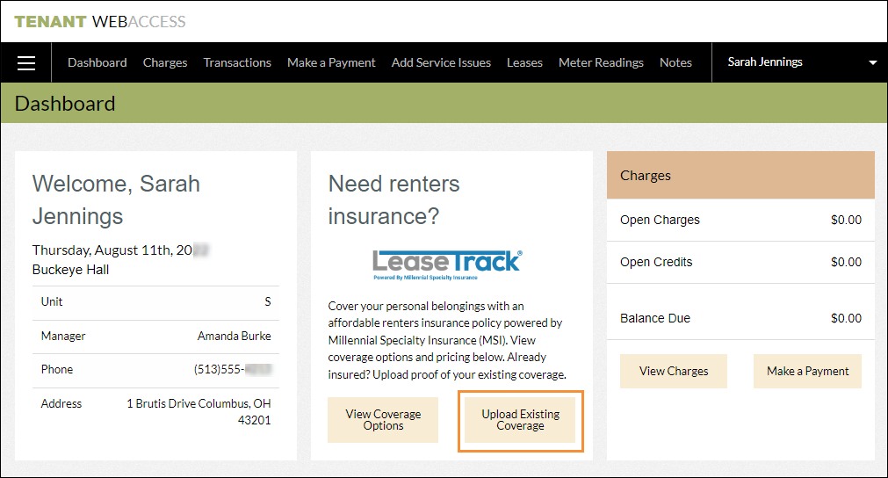
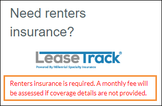

Source: https://rmxhelp.rentmanager.com/Topics/Express/KB/LeaseTrack-Insurance.htm
LeaseTrack Insurance
Rent Manager has partnered with Millennial Specialty Insurance (MSI) and LeaseTrack to offer residential renters and manufactured housing homeowners insurance compliance and tracking. With this partnership, tenants and homeowners can purchase insurance directly through Tenant Web Access (TWA) or rmResident. Additionally, you can track insurance policies for your active leases in Rent Manager. You can even set up an account with LeaseTrack to establish a Master policy insurance plan which automatically covers tenants and homeowners with inadequate insurance coverage. For more information on setting up this integration for the first time, refer to Activate and Set Up LeaseTrack Insurance.
The partnership with LeaseTrack offers three coverage options. These options are described below:
|
Coverage Option |
Description |
|---|---|
|
HO4 |
This option is available by default to all users with Tenant Web Access (TWA) set up and provides the following functionality:
|
|
Tracking |
This upgrade provides insurance tracking for tenants and homeowners, whether their insurance is through LeaseTrack or another provider, and offers the following additional functionality:
|
|
Enforcement |
In addition to everything in the Tracking upgrade, this option allows you to establish a Master policy that ensures your tenants and homeowners are properly covered. LeaseTrack offers multiple Master policy options (e.g., 100K Renters/Homeowners Insurance for liability up to $100,000, 300K Renters/Homeowners Insurance for liability up to $300,000, and so on). This upgrade provides the following functionality:
Warning To establish a Master policy in Rent Manager, you must have an account with LeaseTrack. To set up an account, call 800-945-5990. |
HO4 Option: Purchase Insurance
If Tenant Web Access (TWA) is enabled in your database, the ability for tenants and homeowners to purchase insurance directly from LeaseTrack is automatically enabled. This option does not require you to set up an account with LeaseTrack.
With this integration, tenants and homeowners can purchase insurance from LeaseTrack via TWA and rmResident with no cost or effort on your part. This option is added to the tenant's dashboard in TWA or as a More menu option in rmResident.

More Information
If insurance tracking is not enabled in system preferences, the HO4 option is available for all tenants with leases at properties that do not have a Property Type of Association, RV/Campground, or Short Term Rental selected on the property's details page.
If insurance tracking is enabled in system preferences, this option is available only to tenants and homeowners with leases at properties that have tracking enabled. If the lease is for a unit type that is excluded from insurance tracking, this option is not available. For more information, refer to Activate and Set Up LeaseTrack Insurance.
Tracking Option: Track Insurance
The Tracking option allows you to track which tenants and homeowners have insurance, as well as details about that coverage. This option allows tenants and homeowners to upload their policy information, which you can view in Rent Manager. In addition, if they purchase a policy through the LeaseTrack integration, that information is available to them via Tenant Web Access (TWA), as well as to you in Rent Manager. This option does not require you to set up an account with LeaseTrack.
More Information
The Tracking option is available only to tenants and homeowners with leases at properties with insurance tracking enabled in system preferences. If the lease is for a unit type that is excluded from insurance tracking, this option is not available. For more information, refer to Activate and Set Up LeaseTrack Insurance.

Once this option is enabled in system preferences, tenants and homeowners are able to upload their insurance policies to their account via TWA or rmResident. Alternatively, if they send their insurance policies to you, you can send that insurance information to LeaseTrack at insurance@leasetrack.ai to be added to Rent Manager for you. Once insurance information is uploaded to Rent Manager, you can quickly find that information in reports and dashboard tiles.
If needed, you have the option to manually add the insurance policies for your tenants and homeowners directly in Rent Manager, and even upload a copy of the policy to their lease by clicking Upload Existing Coverage on the tenant's details page.
Enforcement Option: Master Policy Enrollment
If you are tracking insurance, you can also set up a Master policy. This allows you to set an additional system preference to require that tenants and homeowners have insurance. If they either have no insurance or inadequate insurance coverage, they are automatically enrolled in your Master policy.
When you enforce insurance requirements for tenants and homeowners, the integration with LeaseTrack evaluates any tenants and homeowners with leases at the properties with lease tracking enabled.
Leases are evaluated for Master policy enrollment if they meet one the following conditions:
-
New leases created after the Master policy is enabled.
-
Leases that are renewed after the Master policy is enabled.
-
Leases that have policies manually uploaded via Rent Manager.
-
The unit associated with the lease has a site classification of Resident Owned or Employee Owned for homeowners insurance or Community Owned - Occupied, Community Owned - Employee, or Lease to Own for renters insurance. Additionally, leases with resident-owned RVs are not eligible.
LeaseTrack reviews these leases for an insurance policy, which may take several days. Any leases found to have either no insurance coverage or insufficient insurance coverage are automatically enrolled in the Master policy you established with LeaseTrack. There are multiple Master policy options (e.g., 100K Renters/Homeowners Insurance for liability up to $100,000, 300K Renters/Homeowners Insurance for liability up to $300,000, and so on).
For all accounts enrolled in the Master policy, LeaseTrack automatically pushes a charge to Rent Manager for their coverage. Tenants and homeowners are given a grace period to enroll in adequate insurance before being charged for enrollment in the Master policy.
More Information
The posting date, comment, and grace period of the charge are all configured in your LeaseTrack contract. If you need to make any changes to the Master policy, you must reach out to LeaseTrack at 800-945-5990.
The charge amount and charge type can be edited in your system preferences. For more information, refer to Activate and Set Up LeaseTrack Insurance.
When this setting is enabled, the LeaseTrack tile in Tenant Web Access and rmResident displays a warning to tenants and homeowners that if they do not have adequate insurance coverage, they are charged a monthly fee.

More Information
The Enforcement option applies only to leases at properties with the Master policy enabled in system preferences. If the tenant or homeowner's lease is for a unit type that is excluded from insurance tracking, they are not enrolled in the Master policy. For more information, refer to Activate and Set Up LeaseTrack Insurance.